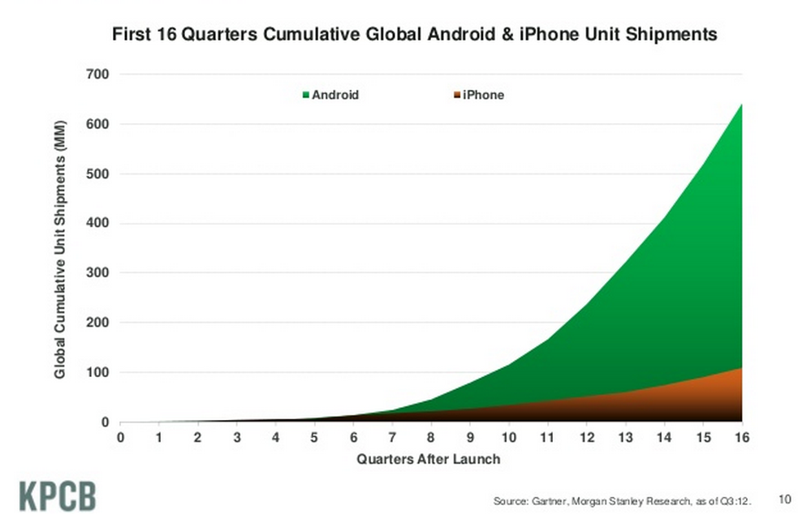
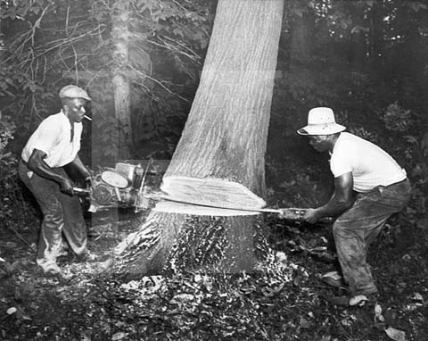

2012-12-07-Your-Website
Table of Contents
- 1 Updates
- 2 Your Website
- 3 General vs. Practical
- 4 But
- 5 Ideas
- 6 Toys
- 7 Execute
- 8 Specifics (The Joel Test)
- 9 How to Use Recommendations
- 10 Server Frameworks
- 11 HTML Framework
- 12 JS Framework
- 13 Database
- 14 Registration
- 15 Logging
- 16 Work
- 17 Hiring
- 18 Resume
- 19 Negotiation
- 20 Managing upward
- 21 Networking
- 22 Just Do It
1 Updates
- Project 2 Due
- Final: Dec 14
- Similar to Midterm
- All topics, emphasis on post-midterm
2 Your Website
3 General vs. Practical
- "the language in which you'll spend most of your working life hasn't been invented yet, so we can't teach it to you. Instead we have to give you the skills you need to learn new languages as they appear"
- Brian Harvey, Why SCIP matters
3.1 Important Parts notes
- Important: Ideas behind REST: statelessness, layered approach that does one thing well, flexibility over immediate performance, uniform interface
- Not as important: Javascript libraries
4 But
- Who is doing interviews?
- Who is starting their own company?
- Who wants to build their portfolio?
4.1 Real World notes
- I realize many of you may be needing to apply this stuff very soon
- So here's the lecture where I try to tell you what I would do when building a website
5 Ideas
- Understand exponential growth
- Get the timing right
- Execute, execute, execute
5.1 Idea required but not sufficient notes
- Wide variation of thoughts on ideas
- One of the biggest road blocks for wanna be entrepreneurs, but most derided
- I think the vision is important, its what drives the company, keeps people working
- The plan for the idea less so
- The concrete product most important
- Let's talk about these elements
6 Toys
- "the next big thing always starts out being dismissed as a “toy.”"
- Chris Dixon, Blog

6.1 Why? notes
- A few reasons for this
6.2 Exponential Growth two_col
- New markets are tiny, not of interest to big players
- Small, growing markets can be easier to enter
- Exponential growth markets can overwhelm big players by the time they break
- In fact, many times big companies will give you business

6.3 Example: Mobile notes
- Big companies have a lot on their plate already
- Aren't going to mess with small stuff when profits are rolling in
- By the time profits stop, another player has already disrupted market and established itself
- As we discussed, happening with mobile now
- Growth over 3 years. What companies do you know that have changed their business model in 3 years
- Google might be one of them (Android)
- More info: Clayton Christensen
7 Execute
- Users are hiring you to do a job: what is it?
- "Institutions will try to preserve the problem to which they are the solution." – Clay Shirky
- Make your product so easy to use, people do it by accident.
7.1 Do the job notes
- Understand your users, make it easy to do what they want
- Don't get trapped in continuing to provide a "solution" for a problem
- Good business model, but only for a while:
- Dell did a great job selling cheap computers, then more expensive computers
- But now Amazon is saying: "you don't even need to own computers!" (Cloud)
- Focus on that one thing that is important and do it very, very well
8 Specifics (The Joel Test)
- Do you use source control?
- Can you make a build in one step?
- Do you make daily builds?
- Do you have a bug database?
- Do you fix bugs before writing new code?
- Do you have an up-to-date schedule?
- Do you have a spec?
- Do programmers have quiet working conditions?
- Do you use the best tools money can buy?
- Do you have testers?
- Do new candidates write code during their interview?
- Do you do hallway usability testing?
8.1 Joel on Software notes
- Joel Spolksy wrote this in 2000! Still a great guide!
- This is what I'd suggest to quickly get moving on the right foot
- If you're managing a team, make sure these are happening
8.2 Source Control
- Use
git
8.2.1 Surprised? notes
- Github will solve a few problems on this list, just use it, even if you're developing alone
8.3 One step build two_col
- For websites, this means "deploy"
- Can you deploy your current code to production in one command?
- Use Heroku

8.3.1 Heroku notes
- Heroku is a Platform as a Service
- Runs web applications, manages scaling
- Provides things like a database
- Google App Engine another example
8.4 Daily Builds
- For websites, this means "stage"
- Can you test your current code before it goes to production at least once a day?
- Use Heroku
8.4.1 Staging notes
- Stage means an area where you can test all the new features in an environment as close to production as possible
- Another advantage of using a whole platform: already comes with best practices
8.5 Bug Database
- Easy to loose track of problems
- Also good way to prioritize issues
- Use Github Issues
8.5.1 Managing Up notes
- Good defense
8.6 Write a Spec
- Alternatively, write the press release
- Don't write a novel
- Disagreements can be solved with code, but after talking
8.6.1 Bad rap notes
- Developers don't like writing them much
- But it helps nail down issues
- Yelp uses CEP process
- If you get to the "agree to disagree" point, data or code can solve differences
8.7 Testers
- Use unit tests (eg.
unittest2in Python) - Use Selenium (Automates Browsers)
- Very easy to skip, will bite you within 6 months
8.8 Differences notes
- Joel suggests having and paying testers
- I don't think this is best use of resources for small companies
- Economics change when developers can effectively write tests
- Must allocate time to this
- Add tests when you fix bugs
- Helps if developers use product daily
8.9 Tools
- Right tool for the job
- Text Editor: Use
vimoremacs virtualenv(Python);RVM(Ruby)- Learn the command line
8.9.1 Woodworker notes
- (slightly off topic from Joel's list)
- Woodworkers don't hammer stuff in with their shoe
- Make their own tools as first part of job
- When a custom problem comes up, make a custom tool
- These slides, written with mappings in
vim - Text Editor
- Syntax Highlighting
- Macros
- Interact with other tools
- Find across files
9 How to Use Recommendations two_col
- Start with them as default
- If you understand why something is better for your case, use it
- Understand trade-offs

9.1 Trade-offs notes
- One of the themes of this course
- Trying to provide you with a starting point
10 Server Frameworks
Django(Pythong) orRails(Ruby)- Understand Model-View-Controller, asset building
- Experienced: Flask
10.1 Asset building notes
- Structuring your code is important, and these frameworks will enforce it for you until you understand when and why you need to break the rules
- They'll include solutions for Session Cookies, user logins, RESTful resources
- Asset building is a must for production websites: remember lectures on website speed (compressing JS, CSS)
- Hard, useless to build that stuff on your own without experience
- Remember, URLs are resources!
11 HTML Framework
- Bootstrap
- Use an integration module, eg. twitter-bootstrap-rails
11.1 Integration notes
- packages will help you use the HTML framework with the server side framework (eg. templates)
12 JS Framework
- jQuery
- D3 for visualizations
- (Adventurous: AngularJS)
12.1 AngularJS notes
- jQuery will help with normal interactive usage
- d3 for visualization
- Angular: framework for bi-directional reflection of changes: from UI to model and back.
13 Database
- Postgres with Heroku
- MySQL if already set up
- Don't mess around with NoSQL till you understand why your product needs it
13.1 Even then notes
- Postgres will serve your NoSQL needs most of the time anyway
14 Registration
- Google Apps
- Register site with Google, get Gmail, Docs, etc
- Just started charging
14.1 IT notes
- You'll want email along with your site, so just use Gmail
- just started charging $50/user/year :(
15 Logging two_col
- Sever: Log every ID that's on a page
- Frontend: Google Analytics
- Knowledge starts with logs

16 Work
16.1 Topic Change notes
- Jumping topics a bit, what if you'd like to work at a web company instead of build one?
17 Hiring two_col
- Learn about the company
- Ask questions to learn about their problems
- Provide solutions

17.1 Experience notes
- Use experience to answer questions
- Make sure you continue asking questions in the interview
- Ramit Sethi calls this the Briefcase Technique
- Know what's on your resume (Why is it applicable? Why is it interesting?)
- Think of the "interview" as a conversation, what would you say if you met in a coffee shop?
18 Resume
- Use quantitative data
- Describe the difference you made in a company/project, not what you did
- Include your side projects!
18.1 Unique notes
- What makes you a unique candidate?
- Your side projects set you apart. All students here have made a mobile page. How is yours different?
19 Negotiation
- Always try to have > 2 offers on the table
- Once a company decides, they've already sunk a lot of cost into you
- "That would make me comfortable"
19.1 Timing notes
- Pace interviews so you can make the decision together
20 Managing upward
- Ideal email: "I've done the analysis below and recommend we do X. Sound good?"
- If no one is in charge, you're in charge
- Say "yes" but prioritize
20.1 Busy notes
- Your boss is busy, you do the work, make sure you're on the right track
- You shouldn't take on everything, but also shouldn't just start rejecting things.
- Be a positive person: yes, we can do that after X, Z
21 Networking
- Ask questions
- Learn from others
- Help others
- Don't skip stuff because you're lazy or scared

21.1 Skipping Stuff notes
- There are many good reasons not to go to an event, but being lazy is not one of them
- Best opportunities are when you do stuff that pushes your boundaries
22 Just Do It
- Practice
- Start with any idea
- Make a website you're proud to show friends
- Improve it
22.1 Doing is best for learning notes
- Employers look for engagement in these areas
- Almost any are you want to focus in, your website can be your medium